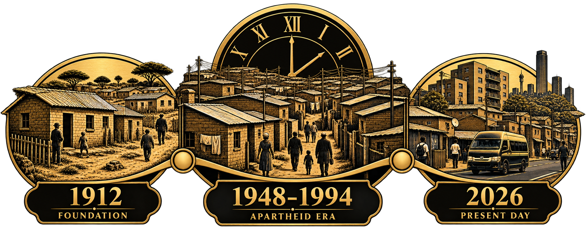

The visual collection
Alexandra
in view.
Look closer at the images and visual ideas shaping this archive. Read each caption alongside the image.
This starter collection contains one undated project image and five generated illustrations. It is not a collection of authenticated historical photographs.
A closer look.
6 images in this collection

Project image
A view across the urban landscape
Image supplied with the original project. Its date, creator and exact viewpoint remain unverified.
Undated project image · not presented as a verified historical photograph

Illustrative artwork
A community connected
An illustrative interpretation of community connection. It does not depict identified historical residents.
AI-generated illustration · not documentary evidence

Illustrative artwork
What we choose to keep
A decorative archive motif representing the preservation of images and memories.
AI-generated illustration · not an archival object


Illustrative artwork
Time and memory
A decorative timeline emblem. Any dates or scenes inside the artwork are part of the illustration, not a historical source.
AI-generated illustration · not historical evidence

Illustrative artwork
Finding our place
A visual symbol for exploring places and landmarks. The illustrated map is not geographic data.
AI-generated illustration · not a geographic map

Illustrative artwork
Heritage in caring hands
A symbolic image of caring for shared heritage. The buildings are illustrative, not a verified reconstruction.
AI-generated illustration · not documentary evidence
Images carry meaning
Look at the image.
Read its context.
An illustration can express an idea without recording an event. Captions explain what is known about each image and where information remains incomplete.
Help grow the visual record.
Have a photograph connected to Alexandra? Tell us what it shows, when it was made and who created it. Permission and source checks are needed before any contribution can be published.
Enquire about an image contribution ↗ Return to the archive directory ↗